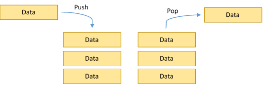
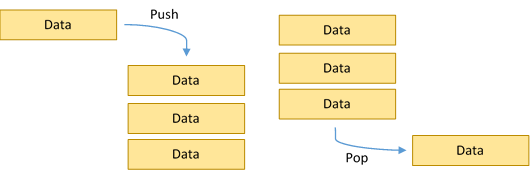
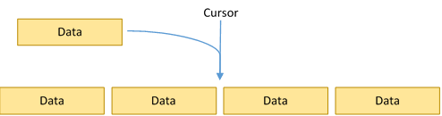

Data Structures
Now that we've gone over how to measure the performance of algorithms, we'll start looking at data structures.
A data structure is, as you might expect, a structured way to store data. Typically, data structures are defined in terms of operations, the most basic of which being adding and removing an element. Even quite complicated data structures like self-balancing binary search trees are still essentially collections of data that you can add and remove from.
Here, we will go over how many data structures operate—independent of their implementations. For example, a stack simply describes semantics for adding and removing elements—you could implement a stack with a queue; this does not matter. What makes a stack a stack is how you use it.
We'll go over implementations and usage for these data structures in class.
Stacks
So, what is a stack? What defines a stack is that adding and removing elements is carried out in 'LIFO' (Last In First Out) order. This means that the last element to be added is the first one to be removed.
You can think of a stack as, well, a stack of objects. To add an element, you place it on the top. To remove one, you take it off the top.
Why are stacks useful? While their application is not as obvious of queues, stacks find their place quite often. It's useful whenever the LIFO principle applies—for example, buffering operations in order to undo them. Or evaluating expressions. Or implementing any recursive algorithm. Etc.
Queues
A queue is just like a stack, except that its semantics obey 'FIFO,' or First In First Out. This is very intuitive—the first element you put in is the first element you get out. A queue is like a waiting line; elements wait in a queue until they are pulled off the front to be processed.
Queues are useful anywhere you need to synchronize or buffer elements through a pipeline. This is useful in many algorithms and practicalities. For example, a queue is useful for distributing data first-come-first-serve or queuing messages for later processing.
Lists
A list is a bit more general than a queue or a list, as the semantics of adding and removing elements are much less constrained. A list is simply a collection of data with a 'cursor' that references one element in the list. (Note that I did not say 'array'—a list can be implemented as an array, but does not have to be.) The list supports adding, removing, and modifying whatever element the cursor is currently on, as well as moving the cursor.
Because a list is so general, specific applications are hard to list. However, a list is basically a generalized array data structure, so wherever arrays are useful, the 'list' concept is useful (if not an implementation itself). And that's just about everywhere.